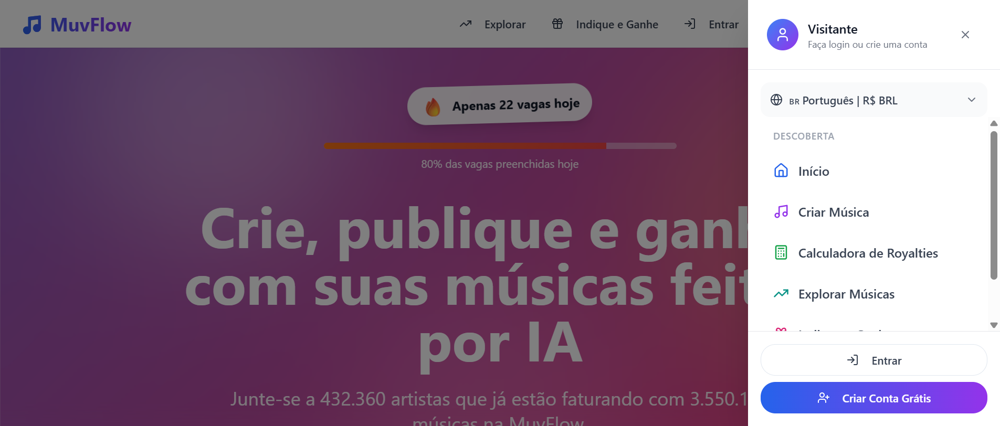
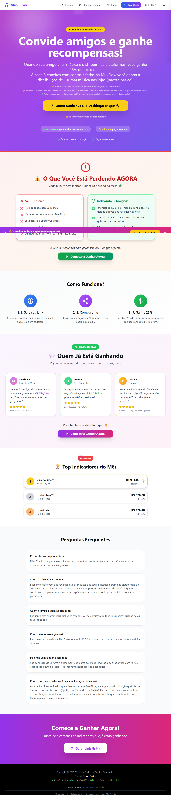
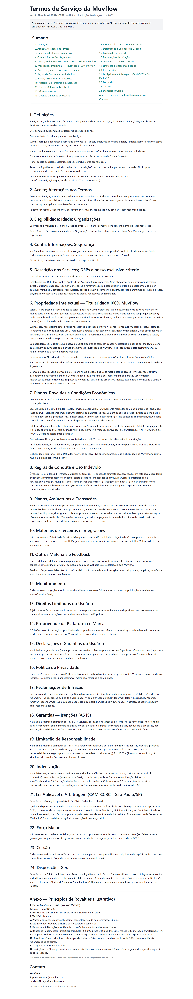
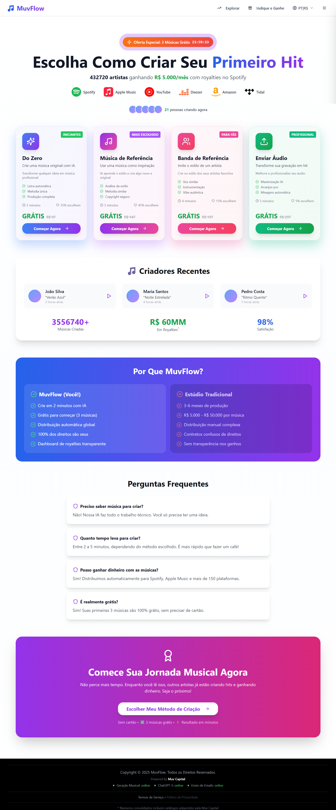
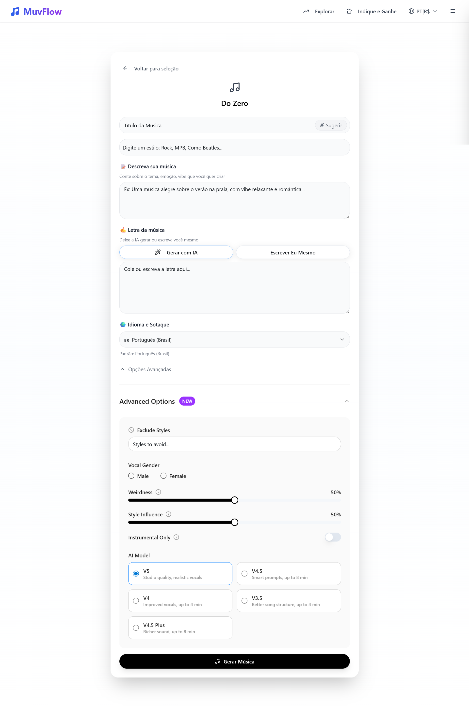
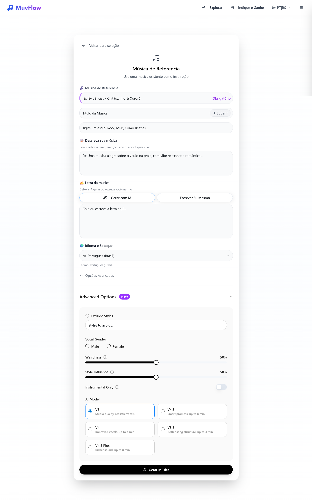
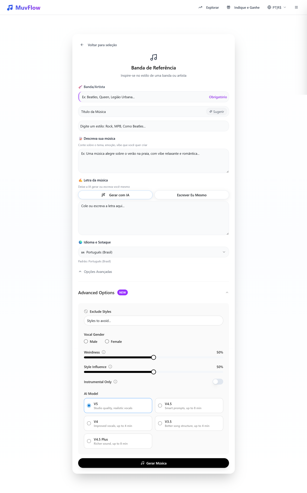
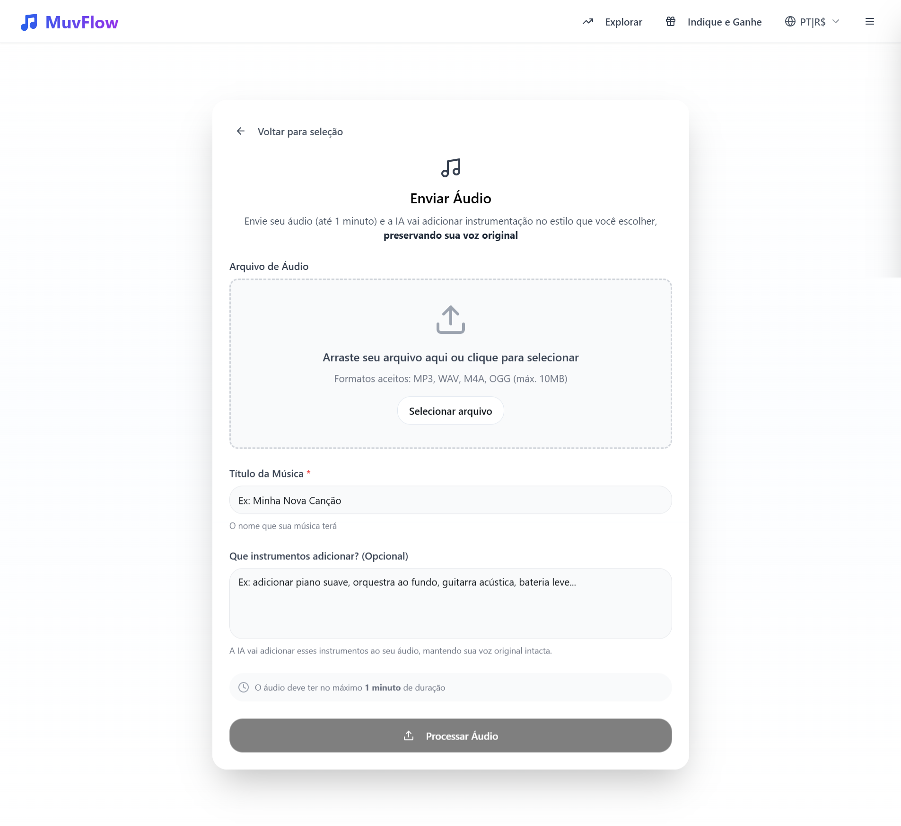

Indice
Parte 1
Resumo Executivo
Top 5 Achados Criticos
-
1Cessao de 100% dos direitos autorais completamente invisivel O core do modelo de negocio (cessao de IP para securitizacao pela Hurst Capital) nao e mencionado em nenhuma tela publica. Esta enterrado na Secao 6 dos Termos, atras de checkbox generico. Configura potencial bait and switch.
-
2Dark patterns sistematicos em todas as paginas 7 tipos distintos de dark patterns operando simultaneamente: escassez artificial, urgencia falsa, trick wording, privacy zuckering, social proof inflado, preco-ancora ficticio e confirmshaming. Nao sao incidentes isolados — e estrategia sistematica.
-
3Numeros inconsistentes e possivelmente fabricados "432.360 artistas" na LP, "432.690+" no signup, "412.360" no hub de criacao, "412.720" pos-signup. Plataforma real tem ~2k usuarios ativos e ~14k musicas. Discrepancia de ordens de magnitude.
-
4CTA "Criar Minha Primeira Musica" promete criacao, entrega formulario de conta Dissonancia cognitiva no momento mais critico do funil. O usuario consente com cessao de direitos achando que esta criando musica.
-
5Arquitetura de informacao fragmentada Navegacao contradiz entre top nav e sidebar. "Criar Musica" (o produto) escondido no menu hamburger. 3 formularios de criacao quase identicos gerando choice overload. Hub mistura landing page com produto.
Parte 2
Dark Patterns Identificados
7 padroes manipulativos distintos operando em conjunto ao longo de toda a experiencia.
Parte 3
Jornada Completa Anotada
13 telas em sequencia, do primeiro contato ate a criacao de musica. Cada tela aparece uma vez com seus achados especificos.
1. Landing Page
Primeiro contato. Visual atraente, mas escassez artificial e o primeiro elemento que o olho captura.

-
1"Apenas 22 vagas hoje" — escassez artificial no topo Primeiro elemento visivel. Plataforma gratuita sem limitacao tecnica. Gera desconfianca imediata.
-
2Barra "80% das vagas preenchidas" — urgencia visual falsa Reforco visual do banner com barra de progresso. Duplo dark pattern na mesma area.
-
3"Criar Musica" ausente do top nav Top nav: Explorar, Indique e Ganhe, Entrar. O produto principal da plataforma so aparece no menu hamburger.
-
4~80% do conteudo foca em monetizacao "De 0 a Receita Recorrente", calculadora, indicacao — quase nada sobre criacao artistica. Atrai perfil "renda facil", afasta criadores genuinos.
-
5Nenhum player de audio na LP Plataforma de musica onde o usuario nao pode ouvir nenhuma musica antes de se cadastrar.
-
6Programa de indicacao com linguagem MLM-adjacent "Ganhe 25% dos Royalties Deles Para Sempre" — tom que remete a marketing multinivel.
2. Menu Lateral vs Top Nav
Duas estruturas de navegacao contraditorias coexistem.

-
1Top nav: apenas Explorar, Indique e Ganhe, Entrar Faltam "Criar Musica" e "Calculadora" — funcionalidades-chave escondidas.
-
2Menu lateral tem itens completamente diferentes Sidebar: Inicio, Criar Musica, Calculadora, Explorar Musicas. Experiencia fragmentada entre dispositivos.
-
3"Criar Musica" (o produto) escondido no hamburger Usuarios desktop que nao abrem o sidebar nunca veem o produto principal na navegacao.
3. Explorar Musicas
Catalogo de musicas — deveria ser vitrine musical, parece planilha administrativa.

-
1Interface de lista densa — UX de planilha, nao de vitrine musical Thumbnails pequenos, textos comprimidos, sem cards, sem respiro visual.
-
2Nenhum player de audio visivel Pagina de musicas sem forma obvia de ouvir as musicas.
-
3Sem curadoria ou destaques Nao ha "Top da Semana", "Trending". Catalogo de 3.5M+ sem curadoria e inutilizavel.
-
4Fundo gradiente prejudica leitura; metricas ambiguas ao lado das musicas
4. Indique e Ganhe
Mecanica clara, mas comunicacao agressiva e tom MLM-adjacent.

-
1"O Que Voce Esta Perdendo AGORA" — confirmshaming explicito Faz o usuario sentir que esta perdendo dinheiro. FOMO artificial. Framing negativo para pressionar acao.
-
2"25% dos royalties deles. Para sempre." — linguagem MLM "Para sempre" e promessa legalmente fragil que gera ceticismo.
-
3Top Indicadores com valores nao verificaveis Tabela com nomes e valores sem forma de verificacao. Link de indicacao visivel para visitante nao logado.
5. Calculadora de Royalties
Ferramenta engajante, mas sliders otimistas + disclaimer que anula tudo = bait and switch informacional.

-
1Escassez artificial repetida pela 3a vez Banner de vagas limitadas no topo. A repeticao em multiplas paginas expoe o padrao como sistematico.
-
2Sliders com valores padrao otimistas (Default Bias) R$ 2.050/mes como resultado destacado. Usuario preguicoso aceita cenario otimista sem ajustar.
-
3"Vagas Limitadas para Novos Artistas" com CTA de urgencia Secao inteira dedicada a escassez artificial. Quinta instancia na plataforma.
-
4Disclaimer no final anula todas as projecoes Apos projetar R$ 2.050/mes e R$ 24.600/ano, diz que "nada e garantido, valores meramente ilustrativos". Bait and switch informacional.
-
5"Equivalente a 1.5x salario minimo" — targeting vulneravel Posicionar ganhos como multiplos de salario minimo mira publico de baixa renda, mais vulneravel a promessas de renda extra.
6. Pagina de Signup
~12 elementos persuasivos na mesma viewport. Formulario funcional, mas estrategicamente arriscado.
-
1"Apenas 17 restantes!" + "83% das vagas preenchidas" Mesma escassez da LP, agora com numeros diferentes (22 → 17). A mudanca de numero entre paginas expoe fabricacao.
-
2CTA "Criar Minha Primeira Musica" — acao real e criar conta Dissonancia cognitiva no momento mais critico. Gera frustacao pos-clique e consentimento desinformado com termos.
-
3Checkbox generico esconde cessao de 100% dos direitos autorais "Aceito os Termos de Servico" — atras disso, 24+ secoes juridicas incluindo cessao total de IP e arbitragem obrigatoria.
-
4"Ganhe ate R$50.000/ano" sem evidencia Promessa agressiva. No hub pos-signup vira "R$5.000/mes" (= R$60k/ano). Numeros conflitantes entre telas.
-
5Mencao a "Suno AI V4" revela motor terceirizado Levanta a pergunta: "por que nao uso o Suno direto?" Sem diferenciacao clara do valor agregado.
-
6"4.9 de 5 baseado em 47 avaliacoes" — desproporcional para 432k artistas 0,01% de taxa de avaliacao. O numero baixo contradiz a narrativa de plataforma massiva.
-
7~12 elementos persuasivos na mesma viewport = "tentando convencer demais" Headline, urgencia, bullets, numeros, badges, logos, feed, testimonial, formulario. O excesso reduz confianca.
7. Termos de Servico
O que o checkbox do signup esconde. 24+ secoes, 20-30 minutos de leitura, menos de 5% le.

-
1Secao 6: "Propriedade Intelectual — Titularidade 100% MuvFlow" Clausula mais impactante. Usuario cede titularidade total. MuvFlow/Hurst Capital pode securitizar, vender, licenciar sem consultar. Enterrada na secao 6 de 24+.
-
2Secao 7: Royalties e Condicoes Economicas Percentuais e condicoes de pagamento que o usuario aceita sem visibilidade no signup.
-
3Secao 21: Arbitragem obrigatoria (CAM-CCBC, Sao Paulo/SP) Usuario abre mao da justica comum. Custo de arbitragem proibitivo para individuais. Secoes 18-19 isentam garantias e limitam responsabilidade — contradizendo promessas do signup.
8. Hub de Criacao de Musica
Pos-signup. Funciona como landing page e hub ao mesmo tempo — dilui o foco. 4 cards onde 3 sao quase identicos.

-
1Contador regressivo "11:19:11" — urgencia artificial no hub Timer sem justificativa real. Mais uma instancia de pressao temporal.
-
23 dos 4 cards compartilham 95% dos campos — choice overload fabricado "Do Zero", "Musica de Referencia" e "Banda de Referencia" diferem por 1 campo de texto. A separacao cria paralisia sem entregar valor. O campo "Estilo" do "Do Zero" ja aceita "Como Beatles", tornando os outros redundantes.
-
3Preco riscado "GRATIS
R$49,90" — ancoragem ficticia Em todos os cards. Se nunca custou R$49,90, o desconto e fabricado. -
4Card "Enviar Audio" nao menciona limite de 1 min / 10MB Usuario so descobre no formulario. Preparou audio de 3 min? Frustracao e abandono.
-
5Metade da pagina e material de landing page pos-conversao Comparativo, metricas, FAQ, CTA final — usuario ja esta logado, quer criar, nao ler argumentos de venda.
9. Formulario "Do Zero"
Layout limpo, mas opcoes avancadas expoe termos da API Suno sem traducao.

-
1Campo "Estilo" aceita "Rock, MPB, Como Beatles..." — torna formularios de referencia redundantes
-
2Nenhum campo indica se e obrigatorio ou opcional Usuario nao sabe o minimo necessario para gerar musica.
-
3"Advanced Options" com badge "NEW" — secao inteira em ingles Badge incentiva clique, expondo usuario a complexidade com terminologia estrangeira.
-
4"Weirdness 50%" — jargao da API Suno incompreensivel para leigos Sem tooltip, sem traducao, sem contexto. O que acontece se aumenta? Diminui?
-
55 modelos de IA sem orientacao — descricoes em ingles V5, V4.5, V4, V3.5, V4.5 Plus — nomenclatura confusa, sem recomendacao clara.
10-11. Formularios "Musica de Referencia" e "Banda de Referencia"
95% identicos ao "Do Zero" — a diferenca e 1 campo de texto extra cada.


| Campo | Do Zero | Musica Ref. | Banda Ref. | Enviar Audio |
|---|---|---|---|---|
| Titulo | Sim | Sim | Sim | Sim |
| Estilo | Sim | Sim | Sim | Nao |
| Descricao | Sim | Sim | Sim | Nao |
| Letra (IA/Manual) | Sim | Sim | Sim | Nao |
| Idioma | Sim | Sim | Sim | Nao |
| Opcoes Avancadas | Sim | Sim | Sim | Nao |
| Modelo IA | Sim | Sim | Sim | Nao |
| Campo exclusivo | Nenhum | Musica ref. | Banda/Artista | Upload + Instrumentos |
12. Formulario "Enviar Audio"
Unico formulario realmente diferente — e o melhor do fluxo. Proposta forte, mas limites nao comunicados previamente.

-
1Limite "ate 1 minuto" em texto pequeno — nao informado no hub Usuario pode ter preparado audio de 3 min. Descoberta tardia gera frustracao e abandono.
-
2Aviso "maximo 1 minuto" repetido no final — chega tarde Funciona como validacao, mas o dano (expectativa quebrada) ja foi feito.
Parte 4
Achados Transversais
Problemas que permeiam toda a experiencia e nao pertencem a uma tela especifica.
Numeros Inconsistentes entre Paginas
| Metrica | LP | Signup | Hub Criacao | Calculadora | Realidade (~) |
|---|---|---|---|---|---|
| Artistas | 432.360 | 432.690+ | 412.360 | N/A | ~2.000 |
| Musicas | 3.550.1XX | 3.556.710 | 3.556.740+ | 3.550.440+ | ~14.000 |
| Ganho prometido | N/A | R$ 50k/ano | R$ 5k/mes (=60k/ano) | R$ 2.050/mes | ? |
| Royalties totais | N/A | N/A | R$ 60MM | R$ 16+(?) | ? |
| "Vagas restantes" | 22 | 17 | N/A | "Limitadas" | Ilimitadas |
Cessao de Direitos Autorais — A Omissao Central
O core do modelo de negocio (cessao de IP para securitizacao pela Hurst Capital) e completamente invisivel em toda a experiencia pre-cadastro e quase invisivel no cadastro. O fluxo real:
| O que o usuario entende | O que realmente acontece |
|---|---|
| "Criar musica gratis" | Musica e de titularidade 100% MuvFlow |
| "Ganhar com minhas musicas" | Recebe royalties, mas nao e dono |
| "100% Gratis" | Gratis porque a cessao de direitos e o pagamento |
| "Aceito os Termos" (checkbox) | Aceita cessao de IP + arbitragem obrigatoria + isencao de garantias |
16+ Labels em Ingles — API Suno Exposta
| Atual (ingles) | Traducao sugerida |
|---|---|
| Weirdness | Nivel de Experimentacao |
| Style Influence | Fidelidade ao Estilo |
| Exclude Styles | Excluir Estilos |
| Vocal Gender: Male / Female | Voz: Masculina / Feminina / Mista |
| Instrumental Only | Apenas Instrumental |
| AI Model | Modelo de IA |
| Studio quality, realistic vocals | Qualidade de estudio, voz realista |
| Smart prompts, up to 8 min | Prompts inteligentes, ate 8 min |
| Improved vocals, up to 4 min | Vocais aprimorados, ate 4 min |
| Better song structure, up to 4 min | Melhor estrutura, ate 4 min |
| Richer sound, up to 8 min | Som mais rico, ate 8 min |
| NEW (badge) | NOVO |
Causa provavel: Termos da API Suno AI expostos sem camada de traducao. Quick win: 1-2 horas de dev.
Redundancia dos Formularios de Criacao
- Do Zero
- Musica de Referencia (= Do Zero + 1 campo)
- Banda de Referencia (= Do Zero + 1 campo)
- Enviar Audio (unico diferente)
3 opcoes quase identicas = paralisia de decisao
- Criar com IA (formulario unico + campo de referencia opcional)
- Enviar seu Audio (formulario atual preservado)
Decisao instantanea, sem perda de funcionalidade
Parte 5
Recomendacoes Priorizadas
Consolidadas e sem duplicatas. Cada recomendacao aparece uma vez.